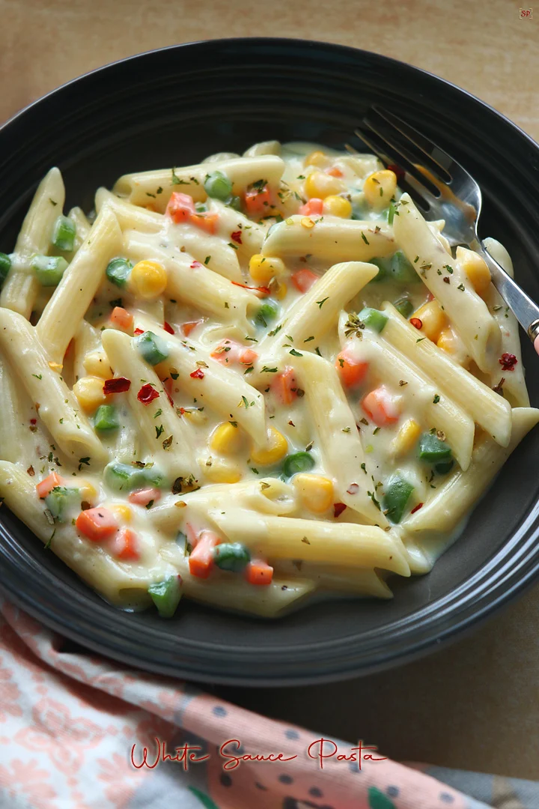

Description
This creamy white sauce pasta is a rich and delicious dish made with butter, milk, and cheese.
It has a smooth texture and a mild flavor that makes it perfect for a quick and satisfying meal.
The combination of herbs and spices enhances its taste, making it a favorite among all age groups.
Ingredients
- 200g pasta (penne or macaroni)
- 2 tablespoons butter
- 2 tablespoons all-purpose flour
- 2 cups milk
- 1/2 cup grated cheese
- 1/2 teaspoon salt
- 1/2 teaspoon black pepper
- 1 teaspoon oregano
- 1 teaspoon chili flakes
- Optional: vegetables (corn, capsicum, broccoli)
Steps
- Boil water in a large pot and add a pinch of salt.
- Add pasta and cook until soft (about 8–10 minutes).
- Drain the water and keep the pasta aside.
- In a pan, melt butter on low heat.
- Add flour and stir continuously for 1–2 minutes.
- Slowly pour milk while stirring to avoid lumps.
- Cook until the sauce becomes thick and smooth.
- Add cheese, salt, pepper, oregano, and chili flakes.
- Mix well until the cheese melts completely.
- Add boiled pasta to the sauce and mix properly.
- Cook for another 2–3 minutes.
- Serve hot with extra herbs on top.
Tips
Use fresh milk and cheese for the best flavor. You can add vegetables like corn or broccoli
to make the dish healthier and more colorful.
Preparation Time: 25 minutes
Difficulty: Medium